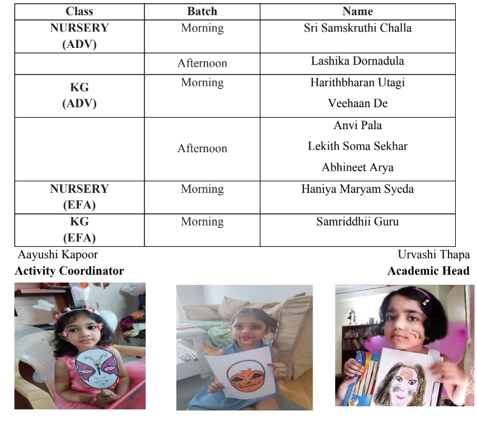

Face Painting Competition - 19.10.22
Artistry refers to the ability to create art. Face painting has given the ability of transforming quiet, reserved kids into confident livewires in a matter of minutes – and that is a powerful thing. Students did not just paint faces but have expressed their emotions through these art pieces. We, at The Class of One conducted the “Face Painting Competition” to encourage students to express their love for art and creativity. We ensured maximum participation and the children got deeply engaged which helped in developing their cognitive, social-emotional, and multisensory skills. All students have created fantastic art pieces, but we must appreciate the masterwork. The listed students went out of the box with their imagination and worked meticulously on their design and innovated Chef-D’oeuvre.
Result Announcement -Face Painting Competition

Story Telling Competition - 31.10.22
The best story is not what is just read or heard; it should be something that you feel deep inside. Our tiny tots created the magical essence of the Tale World during this competition which gave us goosebumps. It was a delightful experience to see their deep understanding and confident narrations during the competition.
.png)
Story Telling Competiton Winners
Listening to stories is edutainment and narrating them is an art! We thus, spare no opportunity to usher our children to engage with stories, to prompt new wonder in them even whilst helping exercise their tender imaginations. In continuation of this endeavour we, at The Class of One conducted the “Story telling competition” to encourage students to be expressive imaginative and confident. We ensured maximum participation and the children got deeply engaged which helped in developing their cognitive, social-emotional, and oratory skills. All students narrated the story in their own unique way, but presentation skills of few students were outstanding. The listed students went out of the box with their imagination and worked meticulously on their presentation.
.png)
National Unity Day - Poster Making Competition - 31.10.22 by class 1
Competition is a good thing, it forces us to do our best!!
“Manpower without unity is not a strength unless it is harmonised and united properly, then it becomes a spiritual power.” The children came together and created beautiful posters to showcase the real meaning of the day. They returned with a valuable lesson after the competition - ‘Unity is Strength.
.png)
.png)
Result Announcement - Poster Making competition
.png)
Let’s Unite Poster Making Competition classes 3-5
National Unity Day or Rashtriya Ekta Diwas is an annual observance which occurs on October 31st to commemorate the birth anniversary of the Iron Man of India, Sardar Vallabhbhai Patel. We, at TCO1 conducted a poster making competition on the theme Let’s Unite for classes 3-5 in their respective Art periods throughout the week. The on-spot competition was conducted class wise and the winners were rewarded with recognition and a certificate for excelling.
f1.png)
ff.png)
Result Announcement - Poster Making competition classes 3-5
ffr.png)